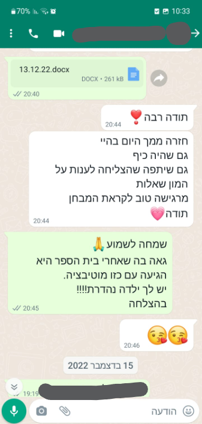

{kind=link}
הורים כותבים




מאבחנת דידקטית מוסמכת ומומחית להוראה מתקנת בשפה ומתמטיקה. 27 שנים במערכת החינוך העל-יסודי. בעלת תואר ראשון בהוראת לשון עברית, ערבית וחינוך. בעלת תואר שני בניהול מערכות חינוך. בוגרת אוניברסיטת חיפה. תושבת נווה זיו
מטרת האבחונים היא להעריך את כישורי הלמידה הבסיסיים של התלמיד בקריאה, הבנת הנקרא, כתיבה, הבעה בכתב ובע"פ ומתמטיקה, ולבדוק את המנגנונים הקוגניטיביים העומדים בבסיס הלמידה. לאחר ביצוע האבחונים נבנית תוכנית טיפולית מתאימה הכוללת את התלמיד, הוריו, הצוות החינוכי בביה"ס ובמידת הצורך נבנית תכנית מותאמת גם להוראה מתקנת, שתסייע לתלמיד בשיפור תפקודיו והישגיו.
במידת הצורך מותאמות לתלמיד דרכי ההיבחנות המתאימות לקשייו במסגרת החינוכית בה לומד. אבחון דידקטי בחשבון – במהלך האבחון הדידקטי בחשבון ניתן דגש על פעולות חשבוניות שונות ומגוונות הנלמדות במסגרות החינוך.
מטרת השיעורים לקדם ולשפר את תיפקודו של התלמיד והישגיו, לצמצם פערים על ידי שימוש בערוצים חזקים של הילד, לצד הקניית חווית למידה חיובית
שעות העבודה עם הילד פרונטליות וגמישות לשעה ולזמן הנכון שבו ילדיכם עירני ומוכן להגיע לעשייה נכונה
תהליך הלמידה מתבצע תוך הכרת עולמו הרגשי של התלמיד, ומתן דגש לצרכיו היחודיים. לאחר היכרות ואבחון מצבו של התלמיד נתחיל בלמידה מהנה בעזרת אביזרים ומשחקים שונים ומגוונים, מצגות ועזרי למידה שונים
שימוש במגוון רחב של כלים, שיטות וסוגי אסטרטגיות למידה לילדי גן חובה, תלמידי היסודי וחטיבת הביניים. בניית תוכנית לימודים מותאמת אישית לתלמיד, תוך התאמה לנקודות החוזקה שלו. קשר רציף עם ההורים